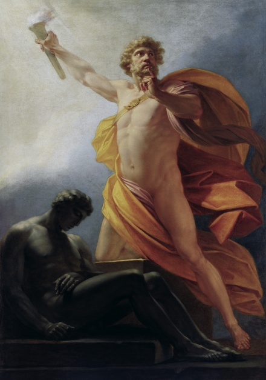
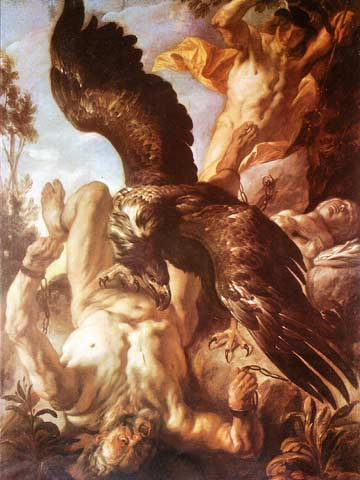
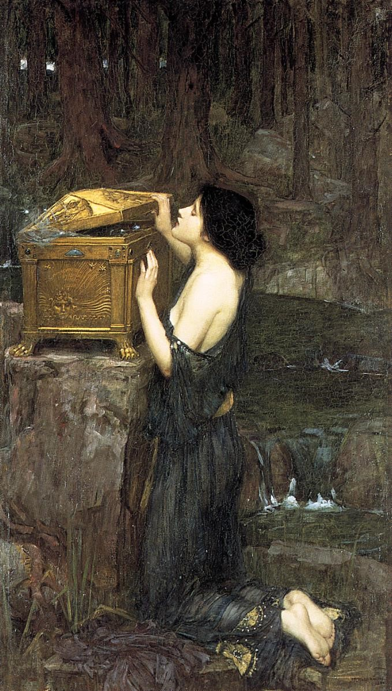

PROMETEU ACORRENTADO

Pintura de Peter Paul Rubens, entre o ano de 1610 e 1611 , no estilo barroco , técnica de óleo sobre a tela e com dimensões de 242,6 x 209,5 cm, pesquisado por André Luiz Greggio Ferro.
Prometheus Bound

Escultura de Nicolas-Sébastien Adam de 1762 em mármore ., pesquisado por André Luiz Greggio Ferro.
Ogum iê.

Pintura em óleo sobre tela. Autor: Jean Louiss, pesquisado por Camila Casagrande Yzidoro.
Prometheus tortured by the eagle.

Christian Griepenkerl (1839-1916): Die Strafe, pesquisado por Camila Casagrande Yzidoro.
Prometheus Bound

Christian Griepenkerl 1878 Óleo em tela, pesquisado por David Simonsen Paes de Almeida Smith.
Ogum da Lua

Autora desconhecida O Quadro mede 36X48cm em alumínio 0,08mm de espessura, que recebeu pátina com verniz vitral preto e tonalizado com betume diluído, além das cores vermelho fogo e verde oliva., pesquisado por David Simonsen Paes de Almeida Smith.
Titan Atlas e Prometeus

Pintura em vaso, por volta de 530 A.C.. Na imagem estão presentes também Ladon e a Águia, pesquisado por Felipe Mendes Woord.
Prometeus Traz Fogo para o Homem
HEINRICH VON FÜGER, 1817. Óleo em tela, 221x156 cm, pesquisado por Felipe Mendes Woord.
Prometheus

José Clemente Orozco, 1930, Fresco, 610 x 868 cm, Pomona College, Claremont, CA, pesquisado por Heloísa Medeiros Silva.
O Compadre de Ogum

Hector Júlio Páride de Bernabó (Caribé), 2014, Serigrafia, 50 x 35cm, Sesc Maceió, pesquisado por Heloísa Medeiros Silva.
Prometeu Acorrentado
Autor Jacob Jordaens, 1640, pesquisado por Lucas CIannella Prado.
Thor Battering the Midgard Serpent

Johann Heinrich Füssli, 1788, pesquisado por Lucas CIannella Prado.
Prometeu de Ouro

Paul Manship, 1934, 5,48 metros (18foot), 8 toneladas, pesquisado por Matheus Henrique de Oliveira Santos.
Estatua de barro à Ogum

Feita ao oeste da África, em Dahomey, Benin, pesquisado por Matheus Henrique de Oliveira Santos.
Prometeu Acorrentado

Autor: Dirck van Baburen. Dimensão: 202 x 184 cm. Ano: 1623. Óleo sobre tela., pesquisado por Maurício Martino.
Pandora
Autor: John Willian Waterhouse. Dimensão: 152 x 91 cm. Ano: 1896. Óleo sobre tela., pesquisado por Maurício Martino.
Prometeu Acorrentado

Rubens, Peter Paul (1611 - 1618) (outra fonte cita 1610 - 1611), óleo sobre tela, dimensões: 242,6 x 209,5 cm, obra no momento localizada no Museum of Art, Philadelphia, EUA. Fontes: http://warburg.chaa-unicamp.com.br/artistas/view/223 http://virusdaarte.net/rubens-prometeu-acorrentado/, pesquisado por Otávio Augusto Botura Colombini.
The Tellus relief

Autor desconhecido. Ano 13 A.C., reconstruído em 1938. Painel em mármore localizado na Ara Pacis Augustae, Ara Pacis Museum, Roma. Fonte: https://en.wikipedia.org/wiki/Ara_Pacis, pesquisado por Otávio Augusto Botura Colombini.
prometheus bound

A pintura do autor: Peter Paul Rubens; começado em 1611 e 1612, e foi terminada por 1618, dimensões de 242.6 × 209.6 cm;, pesquisado por Pedro Armando Miranda Gomes.
prancha de Ogum

Carybé, 1979, Prancha esculpida, foram utilizados diversos objetos do tipo cadeados e correntes para fazer essa escultura, pesquisado por Pedro Armando Miranda Gomes.
Ogum meu pai

Ògún.Pintura em tela fotografada da parede interna do Terreiro dos Palmares, templo Jeje do sacerdote Pai Srael de Avereketi. Palmares/PE. 2009., pesquisado por Vinicius Vieira Bueno Ornelas.
Prometeu acorrentado

Prometeu acorrentado, pintura feita por Tiziano entre os anos de 1548 e 1549, esta atualmente no Museo del Prdo em Madrid, Espanha, pesquisado por Vinicius Vieira Bueno Ornelas.
The Mutilation of Uranus by Saturn

Giorgio Vasari (1511–1574), pintura do século XVI, a pintura foi feita com a técnica de óleo sobre madeira, dimensões 1122 x 424 pixels, pesquisado por Vitor Cuqui Rezende Pinto.
Prometheus Brings Fire to Mankind

Heinrich Füger (1751–1818), pintura feita em cerca de 1817, a técnica usada foi de pintura a óleo, dimensões 483 × 700 pixels, pesquisado por Vitor Cuqui Rezende Pinto.